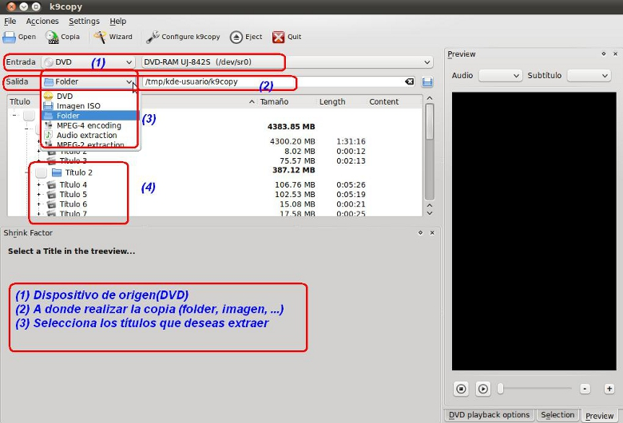

Edición de Audio y video
3.1. K9Copy
Los pasos fundamentales:
1. Introducir el DVD A copiar
2. Seleccionar el Destino o tipo de formato y la carpeta del mismo (puede ser el mismo DVD si es una copia directa)
3. Seleccionar los títulos del DVD que deseamos extraer (por defecto, todos)

Jo.R.C.A. 2004 - 2011

Edición de Audio y Video con Software Libre by José Ramón Cerdeira Alonso is licensed under a Creative Commons Reconocimiento-No comercial-Compartir bajo la misma licencia 3.0 España License